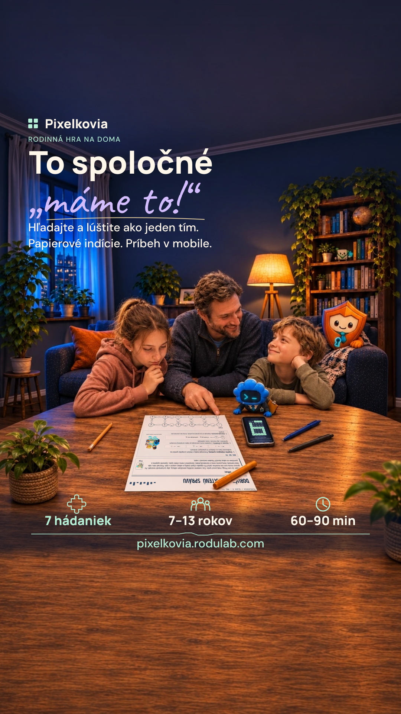

Rovnaký rodinný motív a texty. Sedempercentné bočné okraje, spodných 22 % rezervovaných pre CTA a rozhranie; Stories navyše ponechávajú horných 15 %. Všetky dôležité texty aj herné materiály sú nad spodnou zónou. Výstupy sú PNG v sRGB.

Rekompozícia a rozšírenie scény: vstavaný imagegen. Prompty · Rozmery, bezpečné zóny a zdroje. Ide o generované ilustračné reklamné scény so skutočnými orezanými podkladmi hry. Web hry Pixelkovia.